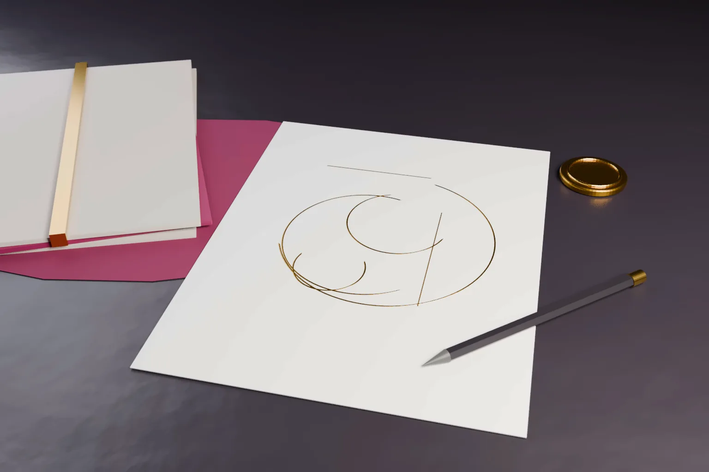

Who owns the copyright in a logo? Many brand owners assume the answer follows the trade mark. On 5 October 2026 the Delhi High Court showed why it does not. In Japan Tobacco Inc v The Central Wearhouse, the owners of the CAMEL brand failed to prove first ownership of the CAMEL artwork.
The ruling matters to every business that commissions a logo or a label. This article explains the decision, what it does not decide and how the United States, the United Kingdom and the European Union approach the same question.
- In Japan Tobacco Inc v The Central Wearhouse, the Delhi High Court dismissed a petition to remove a 1997 copyright registration for a CAMEL COLLECTION label. Tushar Rao Gedela J decided it on 5 October 2026 (2026:DHC:8713).
- The petitioners relied on the history of the CAMEL brand and on trade mark registrations going back to 1946 in India. The court held that this did not prove who first owned copyright in the artwork.
- Under section 17 of the Copyright Act, 1957 the author is the first owner. A party who claims ownership must prove it as a fact. A trade mark registration creates no presumption about copyright.
- Section 40 and the International Copyright Order, 1999 protect foreign works in India. They do not relieve a foreign owner of the burden of proving first ownership.
The dispute
Japan Tobacco Inc and its affiliate Worldwide Brands Inc own the CAMEL cigarette brand. They say the brand was conceived by R.J. Reynolds in 1913. Japan Tobacco acquired the relevant Reynolds companies in 1999.
The respondent, The Central Wearhouse, held a copyright registration dated 22 October 1997 for an artistic work. The judgment describes it as the CAMEL COLLECTION label. The respondent says it has used the mark for garments since 1992.
The petitioners asked the High Court to expunge that registration under section 50 of the Copyright Act. They argued that the CAMEL artwork was theirs and that the respondent could not be its owner. A connected trade mark suit, CS(COMM) 644/2018, was heard with the petition.
What the High Court decided
The court dismissed the petition. The decisive point was first ownership. The petitioners had not proved that they, or their predecessors, owned the copyright in the original artwork.
The court began with the definitions in section 2. For an artistic work, the author is the artist. Section 17 then makes the author the first owner, subject to its listed exceptions. The court said that section 17 contains no deeming fiction. Ownership has to be established on evidence.
The petitioners pointed to trade mark declarations from 1916 and 1926, an Indian registration from 1946 and registrations in Brazil, Norway and Japan. The court accepted that a trade mark registration may lend some credibility. But it held that a registration by itself is not sufficient to prove first ownership of copyright in the artwork it contains.
The only material on authorship was a set of pages from books on the brand's history. The court found that these pages had not been proved. The respondent had denied them. In the court's words, apart from those books there was no iota of evidence. The burden therefore never shifted to the respondent.
Foreign works and the International Copyright Order
The petitioners also relied on section 40 and the International Copyright Order, 1999. These extend Indian protection to works first published in Berne Convention and other member countries. The court accepted that copyright is not confined by territory in the way a trade mark is.
That did not help on the facts. The Order treats a foreign work as if it were an Indian work. It does not tell the court who the author was. A foreign claimant must still prove first ownership before the Order has anything to work on.
What the ruling does not decide
- It does not hold that the respondent owns copyright in the CAMEL artwork. The petition failed because the petitioners did not discharge their burden.
- It does not decide the trade mark suit. The court said its observations are not an expression on the merits of CS(COMM) 644/2018.
- It does not rule on the proviso to section 45(1). That proviso requires a statement and a search certificate from the Trade Marks Registry before an artistic work used or capable of being used on goods is registered. The court treated the argument as academic once first ownership failed.
- It does not deal with the separate trade mark proceedings. The respondent said that an appeal on the trade mark issues is pending in the Supreme Court. The court did not rule on that.
Why this matters for brand owners in India
A label or logo can carry two rights at once. The trade mark protects the sign as a badge of origin for the goods. Copyright protects the artwork as an original artistic work. The two rights have different owners unless the paperwork joins them.
Copyright belongs first to the person who drew the work. Under section 17(c), an employer owns work made by an employee under a contract of service, unless they agree otherwise. Work by an outside designer or agency generally stays with that designer, subject to the limited cases in section 17(b). It passes by a written assignment that meets sections 18 and 19.
A registration under section 45 helps. Section 48 makes the Register of Copyrights prima facie evidence of the particulars entered. In this case that presumption favoured the respondent, which is why the petitioners' burden mattered. But a registration is only as good as the ownership behind it. A rival can still challenge it under section 50, as happened here.
For a century old brand, the original designer may be unknown. The owner then needs other evidence: archive records, corporate history, agency contracts and witnesses who can prove those documents. Our guide to the types of intellectual property protection explains how copyright and trade marks overlap. Our recent note on ACC Steel v ACC shows how copyright in a label can support a trade mark case when ownership is proved.
The United States
US law also vests copyright in the author. Under 17 U.S.C. 201(a), ownership vests initially in the author of the work. A work made for hire belongs to the employer under section 201(b).
A commissioned logo is usually not a work made for hire. That category covers commissioned works only in nine listed classes and only with a signed written agreement. So a brand owner normally needs a signed written transfer from the designer under section 204(a).
Registration matters more in the US than in India. A US work generally cannot be sued on until the Copyright Office has registered it or refused registration, under section 411(a). A federal trade mark registration says nothing about who owns the copyright.
The United Kingdom and the European Union
In the UK, section 11 of the Copyright, Designs and Patents Act 1988 makes the author the first owner. An employer owns works made by an employee in the course of employment. There is no copyright register, so ownership is always proved by evidence.
UK courts sometimes find that a client who commissioned a logo owns it in equity. In R Griggs Group Ltd v Evans, the Court of Appeal held that the client who commissioned a combined logo for its boots was the beneficial owner of the copyright. That depends on the facts of each commission. A written assignment avoids the argument.
The EU has no single copyright title and no copyright register. Each member state applies its own rules on authorship and transfer. In Germany, for example, copyright itself cannot be assigned during the author's life. A brand owner takes exclusive rights of use instead. An EU trade mark registration does not show who owns the copyright in the sign.
Practical steps for brand owners and designers
- Get a signed written assignment of copyright from every outside designer or agency before a logo or label is launched. In India, state the rights, the territory and the duration, as section 19 requires.
- Keep the design file and, for older brands, the archive. Plan how each document will be proved in court, not only produced.
- Record assignments in group restructurings and acquisitions. A purchase of a company or a trade mark does not by itself pass copyright in artwork held by another entity.
- Register the artwork in India where it is used on goods, and obtain the Trade Marks Registry search certificate that the section 45 proviso requires.
Frequently asked questions
Does a trademark registration give me copyright in my logo in India?
No. A trade mark registration protects the sign as a brand. Copyright in the artwork belongs to its author or employer, or to someone who takes a written assignment. In this case the Delhi High Court held that a trade mark registration alone does not prove first ownership of copyright.
Who owns copyright in a logo made by a freelance designer?
In India, the designer is generally the first owner. The client takes ownership through a written assignment signed by the designer. The US and the UK take a similar approach.
Can a copyright registration in India be cancelled?
Yes. A person aggrieved can apply under section 50 of the Copyright Act to expunge or vary an entry in the Register. The applicant must prove its case. Here the petition failed because the petitioners did not prove they first owned the artwork.
Official source
- Japan Tobacco Inc & Anr v The Central Wearhouse & Anr, Delhi High Court, C.O.(COMM.IPD-CR) 814/2022, judgment of 5 October 2026, 2026:DHC:8713
- The Copyright Act, 1957 on India Code (sections 17, 18, 19, 40, 45, 48 and 50)
- 17 U.S.C. 201, ownership of copyright
- 17 U.S.C. 101, definition of a work made for hire
- UK Copyright, Designs and Patents Act 1988, section 11